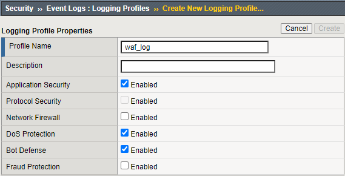
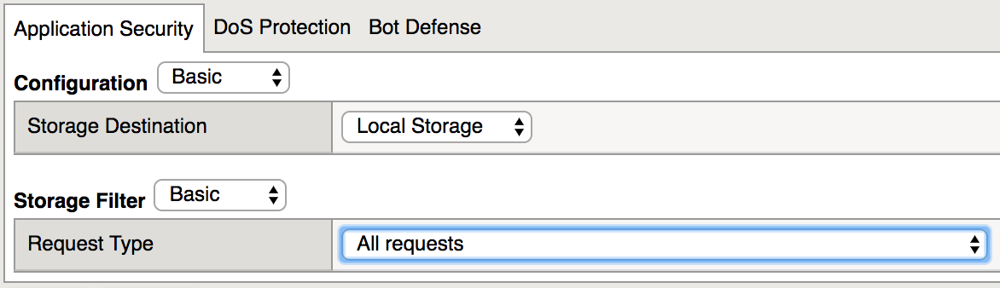
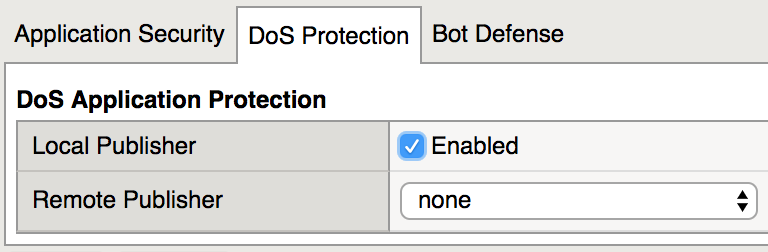
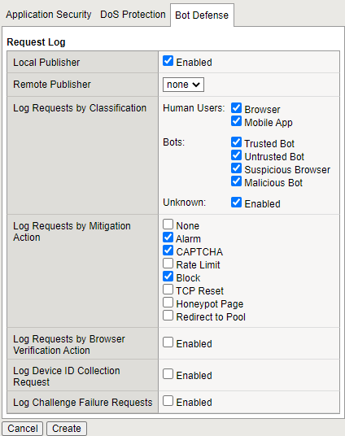
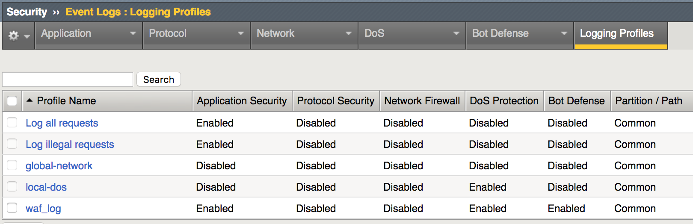

WAF - Identifying the level of protection required for applications > WAF - Identifying the level of protection required for applications Source |
Create WAF logging profile¶
You will begin by creating a logging profile to associated with WAF policies to log all incoming requests. In a production environment this would lead to information overload, but for the lab environment will be used for informational purposes.
Select Security->Event Logs->Logging Profiles then click Create
For Profile Name enter waf_log
Select the Application Security, Dos Protection, and Bot Defense checkboxes
On the Application Security tab, for Request Type select All requests
On the DoS Protection tab select the Local Publisher checkbox
On the Bot Defense tab select all the checkboxes in the Log Requests by Classification. In Log Requests by Mitigation Action select Alarm, CAPTCHA and Block.
Click Create and you should see a waf_log in the Logging Profiles

{kind=link}
{kind=link}
{kind=link}
{kind=link}
{kind=link}